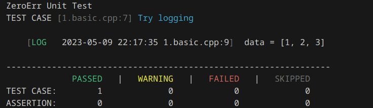
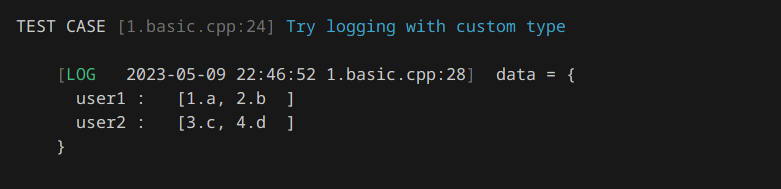
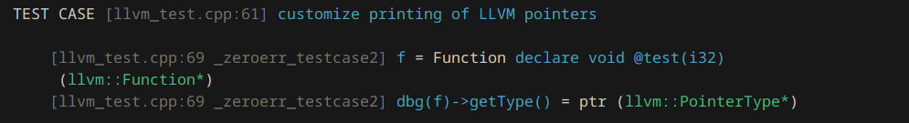

Table of Contents
Why we need another unit testing framework
The current popular unit testing frameworks, e.g. Catch2, doctest, Boost.Test and cpputest are mature and well-established which covers common cases during development. The logger libraries like glog and spdlog are also easy to use. However, there are still some issues:
1. Generic Printing
Most unit testing frameworks and logger libraries can not provide a generic printing for user customized type. Especially, when using containers, struct and pointers (including smart pointers), user have to manualy write code to generate the log message or print those information during unit testing failed cases.
This library zeroerr gives you an ability to print generically for all types:
Similar to other C++ unit testing frameworks, zeroerr will convert this piece of code into a function and register it to automatically run once you link the main function and the library. Here, we can log the data in vector template directly without writing any code.

For the custom struct type with override std::ostream& operator<<(std::ostream&, Type) stream output, you can use it not only for this type but also all contains using this type, including multiple recurisve contains:

Of cause, in many cases, some third-party libraries may not use << operators. For those cases, we can write own rules to create a generic way for printing. For example, LLVM llvm::Function* type can not be streamed into std::ostream, we can write code to handle it. However, it will be more simple if we can write a rule for all the sub-classes of llvm::Value and llvm::Type since we can call the print method to print the output. Here we use a dbg marco defined in zeroerr to quickly print any type. This is very similar to the dbg marco in rust.
This functin PrintExt will match all the class who's base class is Value and Type. Then, it will create a stream `llvm::raw_os_ostream for output.

2. Joint using of assert, log and unit testing
If you use a logger, an unit testing framework and a smart assert libary, you can joint use them and some macros may conflict. In zeroerr, if an assertion is failed, the logger will recevie an event and stored in your log file. If you are using an assertion in unit testing, the assertion can be recorded and reported in the end.

Further more, the unit testing can check the log result matches the previous running result to avoid writing code to check it.
Once you set ZEROERR_HAVE_SAME_OUTPUT marco, the system will check the output stream and save the first run result into a file. Then, the next run will compare the result to see if it the same. (Currently experimental)
Finally, for the log system, the unit testing can access the log data to ensure that the function has executed the expected logic and results.
In order to access the log, we need to pause the log system first, to avoid the data being output to the file, then call the function, access the data in the log through the LOG_GET macro, and finally resume the log system. (Currently experimental, only the first call of each log point can be accessed)
3. Fuzzing Support
Most Unit Testing frameworks do not support fuzzing. However, it's a powerful feature to automatically detect faults in the software and can greatly reduce the work to write test cases.
Different than other fuzzing framework, zeroerr can also support logging and assertion in the code, so the fuzzing result not only contains corpus but also with the logging and assertion information.
Here is an example of using zeroerr to do structured fuzzing:
Inspired by fuzztest, Domain is a concept to specify the input data range (or patterns) for the target function. Here, we use InRange to specify the range of k is 0 to 10, and Arbitrary to specify the data of num can be any random string. Then, we use WithSeeds to specify the initial seeds for the fuzzing.
The macro FUZZ_TEST_CASE will generate a test case which can connect with libFuzzer to run the fuzzing. Finally, we use Run(10) to call libFuzzer to run the target for 10 times.
To build the test case with fuzzing, you need to use clang++ to compile the code and with -fsanitize=fuzzer-no-link and link the -lclang_rt.fuzzer_no_main-x86_64 which is a version of libFuzzer without main function. You can find this runtime library by calling clang++ -print-runtime-dir. Here is the complete command to build the test case with fuzzing support:
Features
Using ZeroErr, you can catch your assert error, log fatal event in the unit testing. The fatal condition will be recorded and printed. Here are a list of features we provided:
- Minimal Requirement You can only include what you need. If you need assert but no unit testing, no problem.
- Optional thread safety You can choose to build with/without thread safety. For some simple single thread program, log is no need to be multithread safed.
- Fastest log Using a lock-free queue for logging and multiple level of log writing policies. You can choose to only write to disk with the most important events.
- Customized print / log / assert printing format You can customize your printing format for everything. There is a callback function for the printing.
- Quickly debug something You can use dbg macro to quickly see the output, it can print the expression also.
- Colorful output You can have default colorful output to terminal and no color for file
- Print struct/stl/special library data structure
- Doctest like assertion and unit test feature You can use your unit test as a documentation of function behavior. The output of unittest can be a documented report.
- Lazy logging for assertion After assertion failed, the logging result will print automatically even if you didn't redirect to your error stream
- Logging Category Logging information can have customized category and only display one categroy based on your assertion or configuration
- Logging for Unit Testing You can use a correct logging result as your unit testing comparsion. So you just need to manually verify your log once and setup it as baseline comparsion. The unit testing framework will use that as the result to verify unit testing
- Structured Logging We can support output structured information directly into plain text, json, logfmt, or other custom format
- Automatic Tracing with logging While logging at the end, we can record the time consuming for this function.
Header-only libraries
- dbg
- print (without use extern functions)
- assert
- color (if always enable)